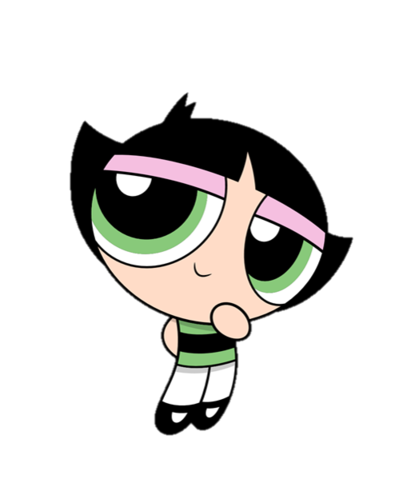
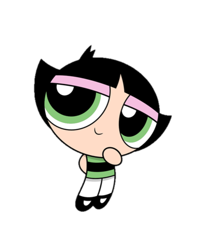

Bubbles is the cutest of The Powerpuff Girls known as "The Joy and the Laughter." Her signature color is sky blue and she loves animals. Her first appearance was in the short Whoopass Stew. She is the 'Sugar' of the trio. However, when she's angry, she can be more furious than Buttercup.
Blossom, the "Everything nice" part of the trio, is the confident and courageous leader of The Powerpuff Girls. Dubbed "Commander and the Leader," she is best known for her level head and determination, as well as leading the girls to victory and saving the day. She first appeared alongside Bubbles and Buttercup in the Whoopass Stew short "A Sticky Situation!".

Buttercup is the toughest, yet the goofiest of The Powerpuff Girls known as "The Toughest Fighter." Her signature color is lime green and she is also best known for her aggressive and tomboyish demeanor and dislike of "girly" things. Her first appearance was in the short Whoopass Stew. She is the 'spice' of the trio.

 

Blossom
Bubbles
Buttercup
The Rowdyruff Boys.

Other, less Mirror World villains.